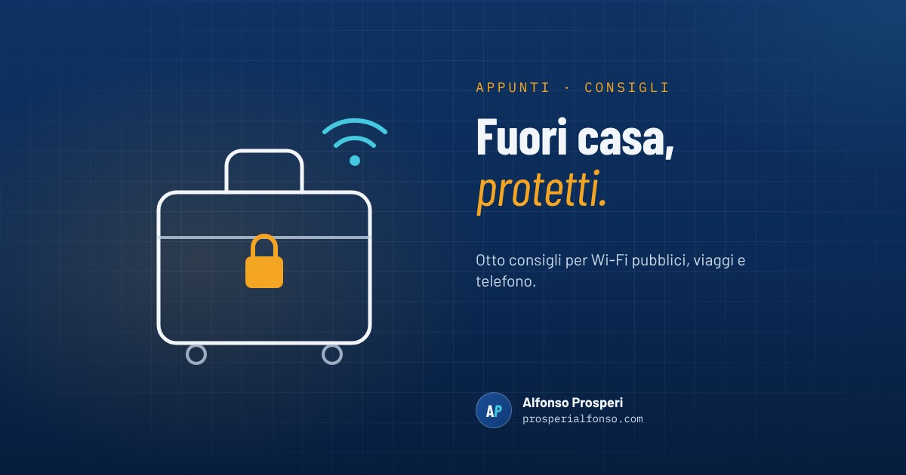

In vacanza o in viaggio si abbassa la guardia: si usa il Wi-Fi dell'hotel, si ricarica il telefono dove capita, si prenota in fretta. Ed è proprio lì che i truffatori aspettano. Ecco otto abitudini semplici per stare tranquilli anche fuori casa.
Otto consigli
- Wi-Fi pubblici con prudenza. Su reti di hotel, bar o aeroporti evita banca e acquisti. Se proprio serve, usa la connessione dati del telefono o l'hotspot personale.
- Attenzione ai nomi delle reti. Chiedi il nome esatto del Wi-Fi alla reception: chi vuole spiarti può creare una rete con un nome simile.
- Verifica in due passaggi attiva. Su mail, banca, social e WhatsApp: anche se qualcuno ruba la password, senza il secondo codice non entra.
- Aggiornamenti prima di partire. Telefono e computer aggiornati chiudono le falle note.
- Blocco schermo e localizzazione. Impronta o PIN sul telefono e la funzione "Trova il mio dispositivo" attiva: se lo perdi, puoi localizzarlo o cancellarlo da remoto.
- Prese USB pubbliche. Meglio il tuo caricatore attaccato alla corrente o un power bank, invece delle prese USB di stazioni e aeroporti.
- Offerte di viaggio troppo belle. Case vacanza a prezzi stracciati, pagamento con bonifico, contatti solo via chat: sono i segnali tipici di una truffa. Prenota dai siti ufficiali e paga con metodi tracciabili.
- Foto e posizione sui social. Pubblicare in diretta che casa è vuota per due settimane non è una buona idea: meglio condividere le foto al ritorno.
Se qualcosa va storto
- Telefono perso o rubato: bloccalo da remoto, chiama l'operatore per bloccare la SIM e cambia le password principali.
- Movimenti strani sulla carta: bloccala subito dall'app o dal numero verde della banca.
- Truffa online: puoi segnalarla al Commissariato di Polizia Online.
Per le altre buone abitudini di tutti i giorni, trovi i consigli su password sicure e su come proteggere i dispositivi di casa.